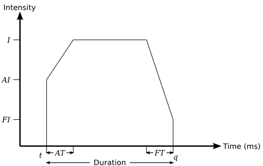
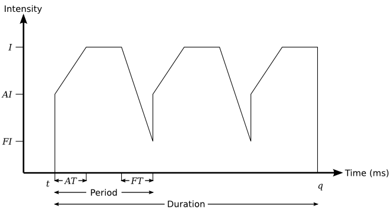

The Feedback API enables a client to control and provide tactile and audio feedback to the user. The feedback is in response to user actions. For example, touching an onscreen button. Control of the feedback involves control of the vibration of the device, when a vibrator is used, or the piezo feedback from the screen.
This is part of the QtMobility Project.
The QtMobility APIs are placed into the QtMobility namespace. This is done to facilitate the future migration of QtMobility APIs into Qt. See the Quickstart guide for an example on how the namespace impacts on application development.
The Feedback API allows application developers to implement feedback and programmatic vibration in their applications. The API provides abstractions for various types of feedback, and allows custom implementations of these types of feedback.
The QFeedbackEffect class provides a simple interface to allow developers to start, stop or pause the playback of an effect. It is an abstract class which is implemented by QFeedbackHapticsEffect and QFeedbackFileEffect. In addition, it allows the instantaneous playback of feedback effects which match the system theme.
A QFeedbackHapticsEffect is a custom effect which allows a program to play a haptic effect on an actuator. Such an effect might have a duration, intensity, and envelope of playback (including attack time and intensity, and fade time and intensity), as well as a period if it is a periodic (repeating) effect.
A QFeedbackFileEffect is a haptic tune or audio file saved in a file which may be played back. These effects must be created by third-party applications, and a plugin which supports the specific file format must be installed. In particular, note that audio effects are generally limited to simple formats, to reduce latency. You can check what formats are supported by the system by calling QFeedbackFileEffect::supportedMimeTypes().
For the vast majority of use cases, the QFeedbackEffect, QFeedbackHapticsEffect and QFeedbackFileEffect classes are the only classes which developers will use in their programs. There are some special cases, however, where they may wish to implement their own feedback plugin. The QtMobility Feedback API allows third party developers to implement QFeedbackInterface in a plugin which may be loaded by the plugin loading mechanism to play feedback effects.
Note that in any application, only the highest priority plugin for each of the three types of feedback will be used to provide the feedback effects, except for file feedback plugins (where only the highest priority plugin for each supported mime-type is used). The interface classes which must be implemented by a plugin to provide effects to clients are:
Generally, the device platform will provide an implementation of each of the three different interfaces, which will be the default plugins used for the various QFeedbackEffects.
Note: On Symbian, vibration feature needs to be enabled in the user profile for the API to work. Note: On Maemo5, periodic vibration does not support attack or fade.
The most common use of the API is to play system theme effects for user interface interaction notifications, for example, button clicks. These system theme effects can be played instantaneously, but cannot be paused or stopped. They are played via the static QFeedbackEffect::playThemeEffect() function:
QFeedbackEffect::playThemeEffect(QFeedbackEffect::ThemeBasicButton);
There are many different theme effects defined, to cover a variety of interactions and notifications, to allow an application to maintain greater consistency with the platform user experience.
QFeedbackEffect::playThemeEffect(QFeedbackEffect::ThemeBounceEffect);
The next most common use of the API is to define a custom effect which can be used to notify the user of application-specific events or to increase the immersiveness of an application. A custom effect may be either periodic or non-periodic.
The following diagram shows the graph of intensity over time of a non-periodic effect which was started at time t and ended at time q, with an intensity of I, an attack intensity of AI, a fade intensity of FI, an attack time of AT, and a fade time of FT, with a total duration of Duration milliseconds:

The following diagram shows the graph of intensity over time of a periodic effect which was started at time t and ended at time q, with an intensity of I, an attack intensity of AI, a fade intensity of FI, an attack time of AT, and a fade time of FT, with a period of Period milliseconds and a total duration of Duration milliseconds:

A custom haptic effect may be defined in the following manner:
QFeedbackHapticsEffect rumble;
rumble.setAttackIntensity(0.0);
rumble.setAttackTime(250);
rumble.setIntensity(1.0);
rumble.setDuration(1000);
rumble.setFadeTime(250);
rumble.setFadeIntensity(0.0);
Note: No periodicity was defined for the effect, although that can be done by calling QFeedbackHapticsEffect::setPeriod() if required.
Once the effect has been defined, it may be played via the API offered in the QFeedbackEffect base class:
rumble.start();
Custom haptic effects are stateful, and so they may be paused:
rumble.pause();
Or stopped:
rumble.stop();
Certain operations cannot be performed on an effect if it is in a certain state. The current state of the effect may be queried via the base-class API:
if (rumble.state() == QFeedbackEffect::Stopped)
qDebug() << "The device has stopped rumbling!";
All custom effects are played using a specific device actuator. By default, the effect is played via the actuator which the current haptic effect provider plugin considers to be the system default actuator, and so most application developers will not need to change which actuator is used. In some cases, however, it may be desirable to set which actuator the effect is played on; doing so requires prior knowledge of either the name or the id of the actuator on which the developer wishes the effect to be played:
QFeedbackActuator *actuator = 0; // default system actuator
QList<QFeedbackActuator*> actuators = QFeedbackActuator::actuators();
foreach (QFeedbackActuator* temp, actuators) {
if (temp->name() == "ExampleActuatorName") {
actuator = temp;
}
}
rumble.setActuator(actuator);
Finally, there is software available which allows "haptic tunes" to be saved to file, for later playback. If the haptic file effect provider plugin on the system understands that file format, the file can be played on device:
QFeedbackFileEffect hapticTune;
hapticTune.setSource(QUrl::fromLocalFile("mySavedRumble.ifr"));
hapticTune.load();
hapticTune.start();
In addition, small audio effects can be played as feedback.
If you wish to see a simple example application which demonstrates some of the above code in use, please see the Haptic Square example application.
For details on the QML support provided for the Feedback API see the documentation for the Feedback QML Plugin.